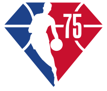
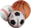

2021–22 NBA season
| 2021–22 NBA season | |
|---|---|
|  NBA 75th anniversary diamond | |
| League | National Basketball Association |
| Sport | Basketball |
| Duration |
|
| Number of games | 82 |
| Number of teams | 30 |
| TV partner(s) | ABC, TNT, ESPN, NBA TV |
| Draft | |
| Top draft pick | Cade Cunningham |
| Picked by | Detroit Pistons |
| Regular season | |
| Top seed | Phoenix Suns |
| Season MVP | Nikola Jokić (Denver) |
| Top scorer | Joel Embiid (Philadelphia) |
| Playoffs | |
| Eastern champions | Boston Celtics |
| Eastern runners-up | Miami Heat |
| Western champions | Golden State Warriors |
| Western runners-up | Dallas Mavericks |
| Finals | |
| Champions | Golden State Warriors |
| Runners-up | Boston Celtics |
| Finals MVP | Stephen Curry (Golden State) |
{kind=link}
The 2021–22 NBA season was the 76th season of the National Basketball Association (NBA). The NBA returned to a full 82-game regular season in its normal mid-October to mid-April schedule for the first time since the 2018–19 NBA season, after two abbreviated seasons due to the COVID-19 pandemic. The regular season began on October 19, 2021, and ended on April 10, 2022.[1] The 2022 NBA All-Star Game was played at Rocket Mortgage FieldHouse in Cleveland on February 20, 2022.[2][3] The 2022 NBA playoffs began on April 16, 2022, and ended on June 16 with the Golden State Warriors defeating the Boston Celtics in the 2022 NBA Finals.
75th anniversary promotions[edit]
On July 7, 2021, the NBA announced that it would commemorate its 75th anniversary throughout the 2021–22 season. A 75th anniversary diamond jubilee logo is featured in promotions across all NBA properties during the season, including on merchandise, digital and social media, and painted on the courts.[4][5] It also announced its 75th anniversary team, honoring the greatest players in NBA history, as chosen by a panel of media, current and former players, coaches, general managers, and team executives.[6] All NBA uniforms feature the Nike (Association, Icon, and City uniform) and Jordan Brand (Statement and Charlotte Hornets uniform) logos in a diamond embellishment, while the normal NBA logo on the back was modified to also feature diamond embellishments and the NBA mark replaced by the number 75.[7]
The City edition for this season featured uniforms incorporating various design cues from different decades, with 27 of the 30 teams wearing these uniforms. The only teams not to participate were the New Orleans Pelicans, Phoenix Suns, and Utah Jazz. The Suns and Jazz wore last season's City uniforms, while the Pelicans wore a more standard City uniform as a tribute to the city of New Orleans.[8][9] The Classic edition uniform for this season would be donned by the Boston Celtics, Golden State Warriors, and New York Knicks, the NBA's three surviving franchises from its first season. Both the Celtics and Knicks wore modern-day versions of the uniforms they wore from 1946, while the Warriors wore uniforms based on the designs they wore as the Philadelphia Warriors from 1946 to 1962. The classic Nike wordmark-and-swoosh logo appears on the Classic uniforms.[10]
The NBA also unveiled a new set of awards to honor division and conference championship winners, and the MVPs of the conference finals. The division championships were named after Nat "Sweetwater" Clifton (Atlantic Division), Wayne Embry (Central Division), Earl Lloyd (Southeast Division), Willis Reed (Southwest Division), Sam Jones (Northwest Division), and Chuck Cooper (Pacific Division).[11] The previously unnamed conference championship trophies were rebranded in honor of Bob Cousy (Eastern Conference) and Oscar Robertson (Western Conference), while the top performer of each conference finals will now receive awards named after Larry Bird (Eastern) and Magic Johnson (Western) respectively. In addition, the Larry O'Brien Championship Trophy was redesigned to feature the top circular disk engraving the first 75 NBA champions, and the bottom disk representing the next 25 champions.[12]
Transactions[edit]
Retirement[edit]
- On July 6, 2021, Ian Mahinmi announced his retirement from the NBA. Mahinmi played 12 seasons in the NBA, winning one championship with the Dallas Mavericks in 2011.[13]
- On July 18, 2021, Omri Casspi announced his retirement from professional basketball. Casspi played for seven teams during his 10-year NBA career.[14]
- On July 21, 2021, Amile Jefferson announced his retirement from the NBA. Jefferson played two seasons with the Orlando Magic.[15]
- On August 7, 2021, Jarrett Jack was hired as an assistant coach for the Phoenix Suns, ending his playing career. Jack played for nine teams during his 13-year NBA career.[16]
- On August 11, 2021, J. R. Smith enrolled at North Carolina A&T State University with plans to join the Aggies golf team, effectively ending his career in the NBA.[17] Smith played for five teams during his 16-year NBA career, winning an NBA championship in 2016 with the Cleveland Cavaliers and another one in 2020 with the Los Angeles Lakers.[18]
- On August 12, 2021, Kyle Korver joined the Brooklyn Nets as a player development coach, effectively ending his playing career in the NBA. Korver played for six teams during his 17-year NBA career.[19]
- On August 15, 2021, J. J. Barea joined the Dallas Mavericks as a player development coach, effectively ending his career in the NBA. Barea played for two teams during his 14-year NBA career, winning one championship with the Mavericks in 2011.[20]
- On August 24, 2021, Jared Dudley announced his retirement from the NBA while accepting a role as an assistant coach for the Dallas Mavericks. Dudley played for seven teams during his 14-year NBA career, winning an NBA championship with the Los Angeles Lakers in 2020.[21]
- On September 20, 2021, Luis Scola joined Pallacanestro Varese as chief executive officer, ending his playing career. Scola played for five teams during his 10-year NBA career.[22]
- On September 21, 2021, JJ Redick announced his retirement from the NBA. Redick played for six teams during his 15-year NBA career.[23]
- On September 28, 2021, it was announced that Tyson Chandler joined the Dallas Mavericks as a player development coach over the summer, effectively ending his playing career. Chandler played for eight teams during his 19-year NBA career, winning one championship with the Mavericks in 2011.[24]
- On October 5, 2021, Pau Gasol announced his retirement from professional basketball. Gasol played for five teams during his 18-year NBA career, winning back-to-back NBA championships with the Los Angeles Lakers in 2009 and 2010.[25]
- On October 16, 2021, the Beijing Royal Fighters announced Sun Yue's retirement from professional basketball. Sun won a championship with the Los Angeles Lakers in 2009, during his only season with the team.[26]
- On October 20, 2021, Mike Hall announced his retirement from professional basketball. Hall played two games for the Washington Wizards in 2007.[27]
- On October 22, 2021, Gerald Green announced his retirement from the NBA and joined the Houston Rockets coaching staff as a player development coach. Green played for eight teams during his 15-year playing career.[28]
- On October 27, 2021, David Andersen announced his retirement from professional basketball. Andersen played for three teams during his two-year NBA career.[29]
- On November 11, 2021, Damjan Rudež announced his retirement from professional basketball. Rudež played for three teams during his three-year NBA career.[30]
- On November 26, 2021, Alexis Ajinça announced his retirement from professional basketball. Ajinça played for four NBA teams during his 13-year professional career.[31]
- On November 27, 2021, Beno Udrih announced his retirement from professional basketball after being a development coach for the New Orleans Pelicans for the past two seasons. Udrih played for eight teams during his 13-year NBA career.[32]
- On January 18, 2022, Chandler Parsons announced his retirement from professional basketball. Parsons played for four teams during his nine year NBA career.[33]
- On March 9, 2022, Jeff Teague joined the Atlanta Hawks as a scout, effectively ending his NBA career. Teague played for five teams during his thirteen year NBA career.[34]
- On March 21, 2022, Jamal Crawford announced his retirement from the NBA. Crawford played for nine teams during his twenty year NBA career.[35]
Free agency[edit]
Free agency began on August 2, 2021; for the second consecutive year, the period for free agency was pushed back from its normal starting date in July due to COVID-19 pandemic.[36] Notable signings included longtime Toronto Raptors guard Kyle Lowry announcing his decision to sign with the Miami Heat on a long-term deal.[37][38] Lonzo Ball announced he would be signing a four-year, $85 million dollar deal with the Chicago Bulls,[39] joining fellow free agency signing DeMar DeRozan.[40][41] The Los Angeles Clippers re-signed Kawhi Leonard,[42] and the Phoenix Suns re-signed Chris Paul.[43] In the east, the Brooklyn Nets extended Kevin Durant to a four-year $198 million deal.[44]
Coaching changes[edit]
| Team | 2020–21 season | 2021–22 season |
|---|---|---|
| Off-season | ||
| Atlanta Hawks | Nate McMillan (interim) | Nate McMillan |
| Boston Celtics | Brad Stevens | Ime Udoka |
| Dallas Mavericks | Rick Carlisle | Jason Kidd |
| Indiana Pacers | Nate Bjorkgren | Rick Carlisle |
| New Orleans Pelicans | Stan Van Gundy | Willie Green |
| Orlando Magic | Steve Clifford | Jamahl Mosley |
| Portland Trail Blazers | Terry Stotts | Chauncey Billups |
| Washington Wizards | Scott Brooks | Wes Unseld Jr. |
| In-season | ||
| Sacramento Kings | Luke Walton | Alvin Gentry (interim) |
Off-season[edit]
- On June 2, 2021, Boston Celtics head coach Brad Stevens was promoted to president of basketball operations following the retirement of Danny Ainge.[45]
- On June 4, 2021, the Portland Trail Blazers and Terry Stotts had mutually agreed to part ways after nine seasons with the team.[46]
- On June 5, 2021, the Orlando Magic and Steve Clifford had mutually agreed to part ways after three seasons with the team.[47]
- On June 9, 2021, the Indiana Pacers fired head coach Nate Bjorkgren after only one season with the team in which they missed the playoffs for the first time in six years.[48][49]
- On June 16, 2021, the New Orleans Pelicans and head coach Stan Van Gundy had mutually agreed to part ways after only one season.[50]
- On June 16, 2021, the Washington Wizards and head coach Scott Brooks part ways after five seasons with the team.[51]
- On June 17, 2021, Rick Carlisle resigned from his position as head coach of the Dallas Mavericks after the 13 seasons with the team.[52][53]
- On June 24, 2021, the Indiana Pacers rehired Rick Carlisle back as their new head coach for his second stint with the team.[54]
- On June 27, 2021, the Portland Trail Blazers hired Chauncey Billups as their new head coach.[55]
- On June 28, 2021, the Boston Celtics hired Ime Udoka as their new head coach.[56]
- On June 28, 2021, the Dallas Mavericks hired Jason Kidd as their new head coach.[57]
- On July 7, 2021, the Atlanta Hawks hired Nate McMillan as full-time head coach.[58]
- On July 11, 2021, the Orlando Magic hired Jamahl Mosley as their new head coach.[59]
- On July 17, 2021, the Washington Wizards hired Wes Unseld Jr. as their new head coach.[60]
- On July 22, 2021, the New Orleans Pelicans hired Willie Green as their new head coach.[61]
In-season[edit]
- On November 21, 2021, the Sacramento Kings fired head coach Luke Walton and named Alvin Gentry as their interim head coach.[62]
COVID-19 restrictions[edit]
As of October 2021, only the cities of Los Angeles, Toronto, New York City, and San Francisco have implemented requirements for spectators at sporting events to present proof of vaccination for COVID-19. While a majority of the league had seen its players get at least one dose of the vaccine, players in these named markets who choose not to be vaccinated would not be allowed to play home games. Moreover, the NBA has stated these players would be forced to forfeit money for the missed games. As of the announcement, the mandates were affecting the Brooklyn Nets, Golden State Warriors, Toronto Raptors, Los Angeles Clippers, Los Angeles Lakers, and New York Knicks. On January 3, 2022, an indoor vaccine mandate went into effect in Philadelphia, adding the Philadelphia 76ers to the aforementioned list.[63] As of December 2021, 97% of NBA players are fully vaccinated against COVID-19.[64]
Preseason[edit]
The preseason began on October 3, 2021, and ended on October 15.[65] On October 5, a game between the Milwaukee Bucks and Memphis Grizzlies was suspended before the fourth quarter due to a false fire alarm.[66]
Regular season[edit]
The regular season began on October 19, 2021, and ended on April 10, 2022.[1]
|
|
By conference[edit]
|
| ||||||||||||||||||||||||||||||||||||||||||||||||||||||||||||||||||||||||||||||||||||||||||||||||||||||||||||||||||||||||||||||||||||||||||||||||||||||||||||||||||||||||||||||||||||||||||||||||||||||||||||||||||||||||||||||||||||||||||||||||||||||||||||||||||||||||||
Notes
- z – Clinched home court advantage for the entire playoffs
- c – Clinched home court advantage for the conference playoffs
- y – Clinched division title
- x – Clinched playoff spot
- pi – Clinched play-in tournament spot
- * – Division leader
Postponed games due to COVID-19[edit]
- Two Chicago Bulls games (one home game against the Detroit Pistons on December 14 and one road game against the Toronto Raptors on December 16) were postponed after ten Bulls players and additional staff members were placed in the NBA's COVID-19 protocols.[67]
- Two Brooklyn Nets home games (against the Denver Nuggets on December 19 and against the Washington Wizards on December 21) were postponed after ten Nets players were placed in the NBA's COVID-19 protocols.[68]
- The December 19 game between the Cleveland Cavaliers and the Atlanta Hawks was postponed due to five Cavaliers players testing positive for COVID-19.[69]
- The December 19 game between the New Orleans Pelicans and the Philadelphia 76ers was postponed due to the Sixers not having the required minimum eight players available.[70]
- The December 20 game between the Orlando Magic and the Toronto Raptors was postponed due to a COVID outbreak within the Magic organization.[71]
- The December 22 game between the Toronto Raptors and the Chicago Bulls was postponed due to the Raptors not having the required minimum eight players available.[72]
- The December 23 game between the Brooklyn Nets and the Portland Trail Blazers was postponed due to the Nets not having the required minimum eight players available.[72]
- The December 29 game between the Miami Heat and the San Antonio Spurs was postponed due to the Heat not having the required minimum eight players available.[73]
- The December 30 game between the Golden State Warriors and the Denver Nuggets was postponed due to a COVID outbreak within the Nuggets organization.[74]
Play-in tournament[edit]
Only the top six seeds in each conference advanced to the main rounds of the 2022 NBA playoffs, while the next four seeds participated in a Page playoff system tournament from April 12–15, 2022. The 7th place team hosted the 8th place team in the double-chance round needing to win one game to advance, with the winner clinching the 7th seed in the playoffs. The 9th place team hosted the 10th place team in the elimination round that requires two wins to advance, with the loser being eliminated from playoff contention. The loser in the double-chance round hosted the elimination round game winner, with the winner clinching the 8th seed and the loser being eliminated.[75]
Eastern Conference[edit]
| Play-in games | No. 8 seed game | Final seeds | |||||||||||
| 7 | Brooklyn | 115 | 7 | Brooklyn | No. 7 seed | ||||||||
| 8 | Cleveland | 108 | 9 | Atlanta | No. 8 seed | ||||||||
| 8 | Cleveland | 101 | |||||||||||
| 9 | Atlanta | 107 | |||||||||||
| 9 | Atlanta | 132 | |||||||||||
| 10 | Charlotte | 103 | |||||||||||
Bold Game winner
Italic Team with home-court advantage
Western Conference[edit]
| Play-in games | No. 8 seed game | Final seeds | |||||||||||
| 7 | Minnesota | 109 | 7 | Minnesota | No. 7 seed | ||||||||
| 8 | LA Clippers | 104 | 9 | New Orleans | No. 8 seed | ||||||||
| 8 | LA Clippers | 101 | |||||||||||
| 9 | New Orleans | 105 | |||||||||||
| 9 | New Orleans | 113 | |||||||||||
| 10 | San Antonio | 103 | |||||||||||
Bold Game winner
Italic Team with home-court advantage
Playoffs[edit]
The playoffs began on April 16, 2022. The Finals began on June 2 and concluded on June 16.[1]
Bracket[edit]
| First Round | Conference Semifinals | Conference Finals | NBA Finals | ||||||||||||||||
| E1 | Miami* | 4 | |||||||||||||||||
| E8 | Atlanta | 1 | |||||||||||||||||
| E1 | Miami* | 4 | |||||||||||||||||
| E4 | Philadelphia | 2 | |||||||||||||||||
| E4 | Philadelphia | 4 | |||||||||||||||||
| E5 | Toronto | 2 | |||||||||||||||||
| E1 | Miami* | 3 | |||||||||||||||||
| Eastern Conference | |||||||||||||||||||
| E2 | Boston* | 4 | |||||||||||||||||
| E3 | Milwaukee* | 4 | |||||||||||||||||
| E6 | Chicago | 1 | |||||||||||||||||
| E3 | Milwaukee* | 3 | |||||||||||||||||
| E2 | Boston* | 4 | |||||||||||||||||
| E2 | Boston* | 4 | |||||||||||||||||
| E7 | Brooklyn | 0 | |||||||||||||||||
| E2 | Boston* | 2 | |||||||||||||||||
| W3 | Golden State | 4 | |||||||||||||||||
| W1 | Phoenix* | 4 | |||||||||||||||||
| W8 | New Orleans | 2 | |||||||||||||||||
| W1 | Phoenix* | 3 | |||||||||||||||||
| W4 | Dallas | 4 | |||||||||||||||||
| W4 | Dallas | 4 | |||||||||||||||||
| W5 | Utah* | 2 | |||||||||||||||||
| W4 | Dallas | 1 | |||||||||||||||||
| Western Conference | |||||||||||||||||||
| W3 | Golden State | 4 | |||||||||||||||||
| W3 | Golden State | 4 | |||||||||||||||||
| W6 | Denver | 1 | |||||||||||||||||
| W3 | Golden State | 4 | |||||||||||||||||
| W2 | Memphis* | 2 | |||||||||||||||||
| W2 | Memphis* | 4 | |||||||||||||||||
| W7 | Minnesota | 2 | |||||||||||||||||
* Division winner
Bold Series winner
Italic Team with home-court advantage
Statistics[edit]
Sourced to "2021–22 NBA Traditional Stats". NBA.com. Retrieved April 4, 2022.
Individual statistic leaders[edit]
| Category | Player | Team(s) | Statistic |
|---|---|---|---|
| Points per game | Joel Embiid | Philadelphia 76ers | 30.6 |
| Rebounds per game | Rudy Gobert | Utah Jazz | 14.7 |
| Assists per game | Chris Paul | Phoenix Suns | 10.8 |
| Steals per game | Dejounte Murray | San Antonio Spurs | 2.0 |
| Blocks per game | Jaren Jackson Jr. | Memphis Grizzlies | 2.3 |
| Turnovers per game | Luka Dončić | Dallas Mavericks | 4.5 |
| Fouls per game | Jae'Sean Tate | Houston Rockets | 3.7 |
| Minutes per game | Pascal Siakam | Toronto Raptors | 37.9 |
| FG% | Rudy Gobert | Utah Jazz | 71.3% |
| FT% | Jordan Poole | Golden State Warriors | 92.5% |
| 3FG% | Luke Kennard | Los Angeles Clippers | 44.9% |
| Efficiency per game | Nikola Jokić | Denver Nuggets | 32.8 |
| Double-doubles | Nikola Jokić | Denver Nuggets | 66 |
| Triple-doubles | Nikola Jokić | Denver Nuggets | 19 |
Individual game highs[edit]
| Category | Player | Team | Statistic |
|---|---|---|---|
| Points | Karl-Anthony Towns | Minnesota Timberwolves | 60 |
| Kyrie Irving | Brooklyn Nets | ||
| Rebounds | Domantas Sabonis | Indiana Pacers | 25 |
| Andre Drummond | Philadelphia 76ers | ||
| Assists | Darius Garland | Cleveland Cavaliers | 19 |
| Chris Paul | Phoenix Suns | ||
| Steals | Paul George | Los Angeles Clippers | 8 |
| Blocks | Daniel Gafford | Washington Wizards | 8 |
| Mitchell Robinson | New York Knicks | ||
| Three pointers | Bojan Bogdanović | Utah Jazz | 11 |
| Malik Beasley | Minnesota Timberwolves | ||
| Robert Covington | Los Angeles Clippers |
Team statistic leaders[edit]
| Category | Team | Statistic |
|---|---|---|
| Points per game | Minnesota Timberwolves | 115.9 |
| Rebounds per game | Memphis Grizzlies | 49.2 |
| Assists per game | Charlotte Hornets | 28.1 |
| Steals per game | Memphis Grizzlies | 9.8 |
| Blocks per game | Memphis Grizzlies | 6.5 |
| Turnovers per game | Houston Rockets | 16.5 |
| Fouls per game | Detroit Pistons | 21.9 |
| FG% | Phoenix Suns | 48.5% |
| FT% | Philadelphia 76ers | 82.1% |
| 3P% | Miami Heat | 37.9% |
| +/− | Phoenix Suns | +7.8 |
Awards[edit]
Yearly awards[edit]
|
|
|
|
Players of the Week[edit]
The following players were named the Eastern and Western Conference Players of the Week.
| Week | Eastern Conference | Western Conference | Ref |
|---|---|---|---|
| October 19–24 | Miles Bridges (Charlotte Hornets) (1/1) | Stephen Curry (Golden State Warriors) (1/2) | [92] |
| October 25–31 | Jimmy Butler (Miami Heat) (1/1) | Rudy Gobert (Utah Jazz) (1/1) | [93] |
| November 1–7 | Jarrett Allen (Cleveland Cavaliers) (1/1) | Paul George (Los Angeles Clippers) (1/1) | [94] |
| November 8–14 | Kevin Durant (Brooklyn Nets) (1/2) | Stephen Curry (Golden State Warriors) (2/2) | [95] |
| November 15–21 | Giannis Antetokounmpo (Milwaukee Bucks) (1/1) | Damian Lillard (Portland Trail Blazers) (1/1) | [96] |
| November 22–28 | Trae Young (Atlanta Hawks) (1/3) | Devin Booker (Phoenix Suns) (1/3) | [97] |
| November 29 – December 5 | DeMar DeRozan (Chicago Bulls) (1/3) | Donovan Mitchell (Utah Jazz) (1/1) | [98] |
| December 6–12 | Domantas Sabonis (Indiana Pacers) (1/1) | LeBron James (Los Angeles Lakers) (1/1) | [99] |
| December 13–19 | Jayson Tatum (Boston Celtics) (1/4) | Karl-Anthony Towns (Minnesota Timberwolves) (1/3) | [100] |
| December 20–26 | Kemba Walker (New York Knicks) (1/1) | Shai Gilgeous-Alexander (Oklahoma City Thunder) (1/1) | [101] |
| December 27 – January 2 | DeMar DeRozan (Chicago Bulls) (2/3) | Ja Morant (Memphis Grizzlies) (1/2) | [102] |
| January 3–9 | Fred VanVleet (Toronto Raptors) (1/1) | Ja Morant (Memphis Grizzlies) (2/2) | [103] |
| January 10–16 | Darius Garland (Cleveland Cavaliers) (1/1) | Devin Booker (Phoenix Suns) (2/3) | [104] |
| January 17–23 | Trae Young (Atlanta Hawks) (2/3) | Nikola Jokić (Denver Nuggets) (1/2) | [105] |
| January 24–30 | Joel Embiid (Philadelphia 76ers) (1/2) | Chris Paul (Phoenix Suns) (1/1) | [106] |
| January 31 – February 6 | Pascal Siakam (Toronto Raptors) (1/1) | Brandon Ingram (New Orleans Pelicans) (1/1) | [107] |
| February 7–13 | DeMar DeRozan (Chicago Bulls) (3/3) | Luka Dončić (Dallas Mavericks) (1/3) | [108] |
| February 28 – March 6 | Jayson Tatum (Boston Celtics) (2/4) | Karl-Anthony Towns (Minnesota Timberwolves) (2/3) | [109] |
| March 7–13 | Kevin Durant (Brooklyn Nets) (2/2) | Luka Dončić (Dallas Mavericks) (2/3) | [110] |
| March 14–20 | Jayson Tatum (Boston Celtics) (3/4) | Karl-Anthony Towns (Minnesota Timberwolves) (3/3) | [111] |
| March 21–27 | Jayson Tatum (Boston Celtics) (4/4) | Devin Booker (Phoenix Suns) (3/3) | [112] |
| March 28 – April 3 | Trae Young (Atlanta Hawks) (3/3) | Nikola Jokić (Denver Nuggets) (2/2) | [113] |
| April 4–10 | Joel Embiid (Philadelphia 76ers) (2/2) | Luka Dončić (Dallas Mavericks) (3/3) | [114] |
Players of the Month[edit]
The following players were named the Eastern and Western Conference Players of the Month.
| Month | Eastern Conference | Western Conference | Ref |
|---|---|---|---|
| October/November | Kevin Durant (Brooklyn Nets) (1/1) | Stephen Curry (Golden State Warriors) (1/1) | [115] |
| December | Joel Embiid (Philadelphia 76ers) (1/2) | Donovan Mitchell (Utah Jazz) (1/1) | [116] |
| January | Joel Embiid (Philadelphia 76ers) (2/2) | Nikola Jokić (Denver Nuggets) (1/2) | [117] |
| February | DeMar DeRozan (Chicago Bulls) (1/1) | Luka Dončić (Dallas Mavericks) (1/1) | [118] |
| March/April | Giannis Antetokounmpo (Milwaukee Bucks) (1/1) | Nikola Jokić (Denver Nuggets) (2/2) | [119] |
Rookies of the Month[edit]
The following players were named the Eastern and Western Conference Rookies of the Month.
| Month | Eastern Conference | Western Conference | Ref |
|---|---|---|---|
| October/November | Evan Mobley (Cleveland Cavaliers) (1/1) | Josh Giddey (Oklahoma City Thunder) (1/4) | [120] |
| December | Franz Wagner (Orlando Magic) (1/1) | Josh Giddey (Oklahoma City Thunder) (2/4) | [121] |
| January | Cade Cunningham (Detroit Pistons) (1/1) | Josh Giddey (Oklahoma City Thunder) (3/4) | [122] |
| February | Scottie Barnes (Toronto Raptors) (1/2) | Josh Giddey (Oklahoma City Thunder) (4/4) | [123] |
| March/April | Scottie Barnes (Toronto Raptors) (2/2) | Jalen Green (Houston Rockets) (1/1) | [124] |
Coaches of the Month[edit]
The following coaches were named the Eastern and Western Conference Coaches of the Month.
| Month | Eastern Conference | Western Conference | Ref |
|---|---|---|---|
| October/November | Billy Donovan (Chicago Bulls) (1/1) | Monty Williams (Phoenix Suns) (1/2) | [125] |
| December | Erik Spoelstra (Miami Heat) (1/1) | Taylor Jenkins (Memphis Grizzlies) (1/1) | [126] |
| January | J. B. Bickerstaff (Cleveland Cavaliers) (1/1) | Monty Williams (Phoenix Suns) (2/2) | [127] |
| February | Ime Udoka (Boston Celtics) (1/2) | Quin Snyder (Utah Jazz) (1/1) | [128] |
| March/April | Ime Udoka (Boston Celtics) (2/2) | Jason Kidd (Dallas Mavericks) (1/1) | [129] |
Arenas[edit]
- The Indiana Pacers' home arena, formerly known as Bankers Life Fieldhouse, was renamed Gainbridge Fieldhouse on September 27, 2021.[130]
- The Los Angeles Clippers and Los Angeles Lakers' home arena, formerly known as Staples Center, was renamed Crypto.com Arena, beginning December 25, 2021. It was announced in November of that same year.[131]
- The Miami Heat's home arena, formerly known as American Airlines Arena, was renamed FTX Arena on June 4, 2021.[132][133]
- The Oklahoma City Thunder's home arena, formerly known as Chesapeake Energy Arena, was renamed Paycom Center on July 27, 2021.[134]
- The Phoenix Suns' home arena, formerly known as Phoenix Suns Arena, was renamed Footprint Center on July 16, 2021.[135]
- The Toronto Raptors returned to Scotiabank Arena in Toronto at the start of the season. The Raptors were forced to play their 2020–21 home games at the Amalie Arena in Tampa, Florida, due to the long-term closure of the Canada–United States border as COVID-19 vaccines were not widely available.[136]
Media[edit]
This is the sixth year of a nine-year deal with ABC, ESPN, TNT, and NBA TV.[137] Beginning with this season, TNT moved its marquee Thursday doubleheaders to Tuesday nights starting with the season opener. The network will continue to air Thursday night doubleheaders, but only during opening week and beginning in January to avoid competing with Thursday Night Football. TNT aired a doubleheader on Martin Luther King Jr. Day (January 17) and the final day of the regular season (April 10).[138]
ABC began its NBA Saturday Primetime early with a special game airing on December 11
The Portland Trail Blazers signed a broadcasting deal with Root Sports Northwest, replacing NBC Sports Northwest as the team's game broadcasters.[139]
Notable occurrences[edit]
- On May 13, 2020, Wilson once again became the manufacturer and supplier of official NBA game balls, replacing Spalding. Wilson's initial partnership with the league began in 1946 under the NBA's predecessor BAA until it ended after 37 seasons in 1983, when Spalding took over.[140][141]
- On August 6, 2021, Duncan Robinson re-signed with the Heat on a five-year, $90 million contract, the largest ever for an undrafted player.[142][143]
- On August 10, 2021, Luka Dončić signed a five-year, $207 million rookie contract extension with the Mavericks, the largest in league history.[144]
- On October 20, 2021, Buddy Hield passed Peja Stojaković to become the all-time three-point scoring leader in Kings franchise history.[145]
- On October 22, 2021, James Harden passed Kyle Korver for fourth place on the NBA all-time three-point scoring list.[146]
- On October 22, 2021, Chris Paul became the first player to reach 20,000 career points and 10,000 career assists.[147]
- On October 23, 2021, Tyler Herro became the first player in Heat franchise history to record at least 30 points and 10 rebounds in one game off the bench.[148]
- On October 24, 2021, Carmelo Anthony passed Moses Malone for ninth place on the NBA all-time scoring list.[149]
- On October 25, 2021, Ja Morant became the first player in Grizzlies franchise history to record at least 40 points and 10 assists in one game.[150]
- On October 27, 2021, Joe Harris passed Jason Kidd to become the all-time leader in three-pointers made in Nets franchise history.[151]
- On November 2, 2021, Chris Paul passed Steve Nash for third place on the NBA all-time assist list.[152]
- On November 6, 2021, Doc Rivers became the 10th coach in NBA history to reach 1,000 wins.[153]
- On November 24, 2021, Kevin Durant passed Allen Iverson for 25th place on the NBA all-time scoring list.[154]
- On December 2, 2021, the Grizzlies defeated the Thunder by 73 points, 152–79, which is the largest margin of victory in NBA history.[155]
- On December 4, 2021, Duncan Robinson became the fastest player to hit 600 three-pointers, in his 184th game, passing the prior record made by Donovan Mitchell in 240 games.[156]
- On December 9, 2021, LeBron James became the fifth player in NBA history to reach 100 career triple-doubles.[157]
- On December 14, 2021, Stephen Curry surpassed Ray Allen to become the NBA all-time leader in made three-pointers.[158][159]
- On December 17, 2021, Stephen Curry became the fastest player in NBA history to make 150 three-pointers in a season, accomplishing the feat in 28 games.[160]
- On December 27, 2021, Stephen Curry became the first player in NBA history to surpass 3,000 made career three-pointers.[161][162]
- On December 27, 2021, Greg Monroe became the 541st player to play in the NBA this season,[163] establishing an NBA record.[164]
- On December 27, 2021, Josh Giddey became the second player in NBA history to record a double-double whilst going scoreless (Norm Van Lier).[165]
- On December 28, 2021, LeBron James became the third player in NBA history to surpass 36,000 career points,[166] and the youngest player to do so.[167]
- On December 31, 2021, LeBron James became the second player in NBA history to record 40 points and zero turnovers in a game at age 35 or older (Michael Jordan). James is also the first player to record at least 40 points, 10 rebounds, and five three-pointers in 30 minutes or less.[168]
- On January 1, 2022, Stephen Curry broke his own NBA record of consecutive games making at least one three-pointer, officially reaching 158 games[169] and surpassing his previous mark of 157 games, which ended on November 5, 2016.[170]
- On January 1, 2022, DeMar DeRozan became the first player in NBA history with a game-winning buzzer beater on consecutive days.[171]
- On January 2, 2022, Josh Giddey became the youngest player in NBA history to record a triple-double at 19 years and 84 days, surpassing the record set by LaMelo Ball last season.[172] Giddey also became the youngest player in NBA history to lead all players in points, rebounds, and assists in one game, becoming the second teenager to do so along with Luka Dončić.[173]
- On January 3, 2022, LeBron James met the minimum criteria for points per game by playing at least 70 percent of his team's games, averaging 28.6 points, and became the oldest player to average 25+ points per game, having already been the youngest to do so, as he averaged 27.6 points per game in his sophomore season at 20 years old.[174] He also surpassed Oscar Robertson for 4th all-time free throws made.[175]
- On January 4, 2022, Russell Westbrook had his first game without turnovers since March 14, 2016;[176] this snapped the longest streak of consecutive games with a turnover since they have been first recorded for the 1977–78 NBA season at 407 games.[177]
- On January 7, 2022, LeBron James became the oldest player in NBA history to record at least 25 points in ten straight games, doing so at 37 years old.[178] He also passed Alvin Robertson for 10th all-time in career steals.[179]
- On January 7, 2022, Trae Young had his 17th consecutive 25-point game, breaking a tie with Dominique Wilkins for the Hawks franchise record.[180][181]
- On January 9, 2022, Klay Thompson played his first game after missing nearly 31 months, or 941 days, since June 13, 2019, the decisive Game 6 of the 2019 NBA Finals.[182]
- On January 9, 2022, LeBron James passed Oscar Robertson for 7th all-time in career assists.[183]
- On January 15, 2022, James Harden set an NBA record for most three-point field goals missed with 4,457, overtaking the previous record set by Ray Allen.[184]
- On January 20, 2022, Joel Embiid tied his career-high with 50 points, plus 12 rebounds and three blocks, while making 17 of 23 field goals and 15 of 17 free throws, in just 27 minutes. It is the second-lowest time needed to score at least 50 points in the shot clock era after Klay Thompson's 52-point game in 26 minutes on October 29, 2018. Embiid also joined Hall of Famers Allen Iverson and Wilt Chamberlain as the only players in 76ers franchise history with multiple 50-point games, while recording a double-double with least 50 points and 10 rebounds in the fewest minutes of any NBA player since 1955.[185][186][187]
- On January 20, 2022, LeBron James became the fifth player in NBA history to record at least 30,000 career points and 10,000 career rebounds. James is also the first player to record at least 30,000 career points, 10,000 career rebounds, and 9,000 career assists.[188][189][190]
- On January 20, 2022, Chris Paul had his 13th career game of recording at least 20 points, ten assists, and 0 turnovers. He overtook Tim Hardaway's count for most games since individual turnovers were first tracked in the 1977–78 season.[191]
- On January 21, 2022, Dwight Howard broke a tie with Nate Thurmond to claim sole possession of 10th all-time in rebounds.[192][193][194]
- On January 23, 2022, Jimmy Butler passed LeBron James for first place on the Miami Heat all-time triple-doubles list.[195]
- On January 25, 2022, Nikola Jokić became the first player in NBA history to record at least 5,000 rebounds and 3,000 assists within their first 500 career games.[196]
- On January 26, 2022, Kelly Oubre became the fourth player in NBA history to record at least ten three-pointers coming off the bench (J. R. Smith, Danilo Gallinari, and Donyell Marshall), as the Hornets recorded a franchise record of 158 points and LaMelo Ball had a plus–minus of 45.[197][198]
- On January 29, 2022, Russell Westbrook scored 30 of his 35 points in the second half, the most by any Laker since Kobe Bryant's last game on April 13, 2016.[199]
- On January 29, 2022, the Toronto Raptors became the first team to have five players play at least 50 minutes in a game since the shot clock era.[200][201]
- On February 1, 2022, Josh Giddey became the fourth teenager in NBA history to have record 500 points, 200 rebounds, and 200 assists in his first 45 career games (LeBron James, Luka Dončić, and LaMelo Ball).[202]
- On February 1, 2022, Gary Trent Jr. became the first player in NBA history to have five straight 30-point games after having fewer than five such games in his career (minimum 100 games) entering this streak.[203]
- On February 4, 2022, Gregg Popovich became the first coach in NBA history to win 1,500 games, including the regular season and playoffs.[204]
- On February 5, 2022, Luka Dončić moved into the top 10 for all-time triple-doubles with 44, surpassing Fat Lever.[205]
- On February 8, 2022, Giannis Antetokounmpo, Joel Embiid, and LeBron James reached 20 straight games recording at least 25 points; it is the first season in NBA history that three players have achieved this feat.[206]
- On February 9, 2022, the Warriors–Jazz matchup televised on ESPN was the first in the network's history to have an all women production team. Beth Mowins was the play-by-play commentator, with Doris Burke as analyst and Lisa Salters on the sideline; in addition, 33 other women handled production roles in Salt Lake City and in the ESPN headquarters in Bristol, Connecticut.[207]
- On February 12, 2022, LeBron James passed Kareem Abdul-Jabbar for most combined points in regular season and playoffs.[208]
- On February 12, 2022, DeMar DeRozan tied Michael Jordan's franchise record with the Bulls of five straight games with at least 35 points.[209] On November 22, 2021, DeRozan had already broke a franchise record for most point scored in their first 16 games at 425, just one point ahead Jordan's rookie 1984–85 NBA season.[210]
- On February 12, 2022, Gregg Popovich won his 1,332nd regular season game as head coach, tying Lenny Wilkens for second place all-time.[211]
- On February 12, 2022, Nikola Jokić became the fifth player in NBA history to have multiple seasons recording 15 or more triple-doubles.[212]
- On February 15, 2022, the Celtics became the first team in NBA history to win three straight road games by a margin of at least 30 points in each game. In addition, their win over the Philadelphia 76ers marked the first time in the three-point era (1979–80) that a team made more three-pointers in a game than their opponent had total field goals.[213]
- On February 15, 2022, Josh Giddey became the youngest player in NBA history to both record a triple-double in consecutive games and record a 20-point triple-double.[214]
- On February 16, 2022, DeMar DeRozan recorded his seventh straight 35-point game while shooting 50 percent from the field, breaking a tie with Wilt Chamberlain,[215][216] and recording the longest such a streak.[217]
- On February 16, 2022, Lou Williams passed Dell Curry to become the all-time leader in games played off the bench with 985 (starters were first tracked in 1970–71).[218]
- On February 17, 2022, Duncan Robinson became the fastest player in NBA history to record 700 three-pointers. He made this feat in a span of 216 games, after making six three-pointers in a double-overtime win against the Hornets, surpassing Buddy Hield's previous record in 269 games.[219][220]
- On February 20, 2022, Stephen Curry set the record for most three-pointers made in an All-Star quarter (6), half (8), and game (16).[221][222][223]
- On February 24, 2022, DeMar DeRozan became the seventh player in NBA history with eight straight 35-point games (Wilt Chamberlain, Elgin Baylor, Michael Jordan, Kobe Bryant, LeBron James, and James Harden), at the same time extending his streak of consecutive 35-point games with at least 50 percent shooting to eight,[224][225][226] which ended in his next game on February 27. His streak of ten consecutive 30-point games ended on March 1, just one game behind franchise record held by Michael Jordan.[227][228]
- On March 4, 2022, James Harden, Joel Embiid, and Tyrese Maxey scored at least 20 points in each of their first three games together.[229] Over this four-game undefeated span, Maxey averaged 26.8 points per game, shot 64.9 percent from the field, and shot 70 percent from three-point range on five attempts per game.[230]
- On March 4, 2022, the Pelicans, at that time at least ten games under .500, became the first team in NBA history to outscore their opponents by 100 points across their first four games after the All-Star Break.[231]
- On March 4, 2022, DeMarcus Cousins had his first 30-point game since January 22, 2018.[232][233] His 31 points in 24 minutes were the fewest minutes in a 30-point game in Nuggets franchise history and the third fewest minutes played in a 30-point game in his career, as well as his third career 30-point game in 35 minutes or fewer, equalling Freeman Williams for the most such games in the shot clock era.[234]
- On March 5, 2022, LeBron James recorded a season-high 56-point game, which was also his Lakers career high. He became the fourth NBA player to record a 50-point game at the age of 37 (Michael Jordan, Kobe Bryant, and Jamal Crawford); it was the second-most points scored by a player in NBA history after turning 35 years old, behind Bryant's 60-point farewell game. He also became the oldest player to record 55 points and 10 rebounds in a game, and was the first Lakers to do so since Shaquille O'Neal in 2000, as well as the first player in NBA history to have a 50-point game before turning 21 and after turning 35.[235] James also became the second player after Jordan to record a 50-point game in three different decades,[236] and passed Karl Malone to move into second for all-time minutes played, trailing only Kareem Abdul-Jabbar.[237]
- On March 6, 2022, Bojan Bogdanovic became the first player in NBA history to make at least eleven three-pointers in a game while not making a two-point field goal.[238][239]
- On March 6, 2022, Kevin Durant became the 23rd player in NBA history to record 25,000 career points.[240]
- On March 11, 2022, Gregg Popovich won his 1,336th regular season game as head coach, surpassing Don Nelson for first place all-time.[241][242]
- On March 11, 2022, LeBron James became the oldest player to have multiple 50-point games in a season, and is the first Lakers player since Kobe Bryant in April 2007 to have back-to-back 50-point home games.[243][244]
- On March 13, 2022, LeBron James became the seventh player in NBA history to record 10,000 assists, and he also became first player with 30,000 points, 10,000 assists, and 10,000 rebounds.[245][246]
- On March 14, 2022, there were three different 45+ point games (Karl-Anthony Towns with 60, Stephen Curry with 47, and Trae Young with 46) in one day for the first time in NBA history.[247] Towns' was a career-high, and he broke his own record for the Timberwolves franchise record.[248] He also became the sixth player in NBA history to secure a 60-point, 15-rebound game.[249]
- On March 15, 2022, Kyrie Irving scored a career-high 60 points and passed Deron Williams for Nets franchise record. Irving and Kevin Durant became the first teammates to score 50+ points in consecutive games.[250]
- On March 19, 2022, LeBron James passed Karl Malone for second place as the NBA all-time scoring leader.[251]
- On March 31, 2022, Giannis Antetokounmpo passed Kareem Abdul-Jabbar to become the all-time scoring leader in Bucks franchise history.[252]
- On April 7, 2022, Nikola Jokić became the first player in NBA history to tally at least 2,000 points, 1,000 rebounds, and 500 assists in a season.[253] He finished the season on historical good statistical values on advanced metrics,[254] with the highest single-season player efficiency rating in NBA history at 33.01,[255] and also led the NBA in win shares, offensive win shares, plus–minus, value over replacement player, total rebounds, double-doubles (66), and triple-doubles (19).[256]
- On April 10, 2022, Joel Embiid won a historically close three-players fight with Giannis Antetokounmpo (29.9) and LeBron James (30.3),[257][258][259] for the NBA scoring title, with 30.6 points per game.[260] It was Embiid's first scoring title,[261] the first foreign player to do so,[262][263] as well as the first center to do so since Shaquille O'Neal in 2000,[264] the fourth center to do so since the ABA–NBA merger in 1976,[265] the first center to average at least 30 points since fellow 76ers Moses Malone in 1982,[266] and the first 76er to led the league since Allen Iverson in 2005.[267] Aged 37, James would have broken Michael Jordan's record of oldest scoring leader at 34,[268] but he only played 56 games, two less than the necessary to qualify, due to injuries.[269][270] Embiid became the only player other than Michael Jordan to average 40.4 points or more per 100 possessions.[265]
See also[edit]
 Sports portal
References[edit]
- ^ Jump up to: a b c "NBA announces schedule for 75th Anniversary Season". NBA.com. August 20, 2021. Retrieved August 24, 2021.
- ^ Greer, Jordan (January 27, 2022). "NBA All-Star voting results 2022: Full list of starters, reserves for Eastern, Western Conference rosters". Sporting News. Retrieved January 28, 2022.
- ^ "NBA All-Star Game 2022: Score and highlights". Marca. February 21, 2022. Retrieved February 21, 2022.
- ^ "NBA unveils 75th anniversary season logo". NBA.com. July 7, 2021. Retrieved July 21, 2021.
- ^ "Look: NBA reveals new diamond themed logo to commemorate 75th anniversary for 2021–22 season". CBS Sports. July 8, 2021. Retrieved July 21, 2021.
- ^ "NBA to name 75 greatest players during 75th anniversary season celebration". NBA.com. Retrieved August 10, 2021.
- ^ "NBA unveils diamond embellishments for NBA 75 jerseys". NBA.com. July 30, 2021. Retrieved October 17, 2021.
- ^ "Nike NBA City Edition uniforms unveiled in honor of the 75th anniversary season". NBA.com. November 1, 2021. Retrieved November 20, 2021.
- ^ "Every 2021–2022 NBA City Edition Uniform Explained". Chris Creamer's Sports Logos. November 1, 2021. Retrieved November 20, 2021.
- ^ "Knicks, Celtics and Warriors unveil Nike Classic Edition uniforms". NBA.com. August 5, 2021. Retrieved November 20, 2021.
- ^ "NBA unveils new trophies for division winners named after 6 NBA legends". NBA.com. Turner Sports Interactive, Inc. Retrieved April 23, 2022.
- ^ "NBA introduces new lineup of postseason hardware". NBA.com. Turner Sports Interactive, Inc. Retrieved May 12, 2022.
- ^ Todd, Bijan (July 6, 2021). "Former Wizard Ian Mahinmi announces retirement". NBCSports.com. Retrieved July 6, 2021.
- ^ Feldman, Dan (July 19, 2021). "Omri Casspi, first Israeli NBA player, retires". NBCSports.com. Retrieved July 24, 2021.
- ^ Wiseman, Steve (July 21, 2021). "Amile Jefferson's Duke 'story' has a new chapter". The News & Observer. Retrieved July 24, 2021.
- ^ "Suns Announce Coaching Staff Additions". NBA.com. August 7, 2021. Retrieved August 8, 2021.
- ^ Salvador, Joseph (August 11, 2021). "J.R. Smith to Enroll at North Carolina A&T and Compete for Golf Team". SI.com. Retrieved October 30, 2021.
- ^ Metallinos, Nick (December 23, 2021). "Ray Allen, JR Smith and other former players we'd like to see make a return to the NBA". SportingNews.com. Retrieved January 4, 2022.
- ^ Grasso, Justin (August 12, 2021). "Former Sixers Draft Pick Kyle Korver Joins Brooklyn Nets Staff". SI.com. Retrieved August 29, 2021.
- ^ Sefko, Eddie (August 15, 2021). "J.J. Barea: 'I like coaching. Every time I do it, I like it even more'". Mavs.com. Retrieved October 30, 2021.
- ^ Price, Dwain (August 31, 2021). "Kidd Puts Finishing Touches on His Coaching Staff". Mavs.com. Retrieved September 1, 2021.
- ^ "Luis Scola Nuovo Amministratore Delegato Del Club Biancorosso". PallacanestroVarese.it (in Italian). September 20, 2021. Retrieved September 20, 2021.
- ^ "JJ Redick announces his NBA retirement". NBA.com. September 21, 2021. Retrieved September 21, 2021.
- ^ Price, Dwain (September 28, 2021). "Tyson Chandler is – unofficially – back with the Mavs". Mavs.com. Retrieved October 30, 2021.
- ^ "Pau Gasol announces retirement". FCBarcelona.com. October 5, 2021. Retrieved October 5, 2021.
- ^ White, Jonathan (October 16, 2021). "NBA champion Sun Yue retires on eve of Chinese basketball season". South China Morning Post. Retrieved March 23, 2022.
- ^ Terrasi Borghesan, Ennio (October 20, 2021). "European basketball journeyman Mike Hall announces retirement as a player". Sportando. Retrieved October 20, 2021.
- ^ Maher, Rory (October 22, 2021). "Gerald Green Retires, Joins Rockets Coaching Staff". HoopsRumors.com. Retrieved October 23, 2021.
- ^ Pitman, Kane (October 26, 2021). "Emotional David Andersen calls time on his basketball career". ESPN.com. Retrieved November 23, 2021.
- ^ Boyd, James (November 11, 2021). "Former Pacers forward, 28-year-old rookie Damjan Rudez retires from basketball". The Indianapolis Star. Retrieved January 24, 2022.
- ^ Adams, Luke (November 26, 2021). "Alexis Ajinca Announces Retirement". HoopsRumors.com. Retrieved November 27, 2021.
- ^ Hill, Arthur (November 27, 2021). "Beno Udrih Announces Retirement". HoopsRumors.com. Retrieved November 27, 2021.
- ^ Wells, Adam (January 18, 2022). "Chandler Parsons Retires from NBA; Injury Lawsuit Settled for 'Substantial Amount'". BleacherReport.com. Retrieved January 18, 2022.
- ^ Chouinard, Kevin (March 9, 2022). "Jeff Teague Rejoins the Hawks as a Scout". NBA.com. Retrieved April 1, 2022.
- ^ "20-year NBA veteran Jamal Crawford announces retirement". NBA.com. March 21, 2022. Retrieved March 21, 2022.
- ^ "When does 2021 NBA Free Agency start?". NBC Sports. July 28, 2021.
- ^ Rose, Aaron (August 2, 2021). "Kyle Lowry Announces Signing with Miami Heat". Sports Illustrated. Retrieved January 5, 2022.
- ^ Quinn, Sam (August 6, 2021). "NBA free agency: Kyle Lowry to Heat in sign-and-trade; Goran Dragic, Precious Achiuwa to Raptors". CBS Sports. Retrieved January 5, 2022.
- ^ Zillgitt, Jeff (August 2, 2021). "Chicago Bulls reach agreement with Lonzo Ball on four-year, $85 million deal". USA Today. Retrieved January 5, 2022.
- ^ Schaefer, Rob (August 4, 2021). "Bulls free agency: Grading sign-and-trade for DeMar DeRozan". NBC Sports. Retrieved January 5, 2022.
- ^ Collier, Jamal (August 13, 2021). "For DeMar DeRozan, Lonzo Ball and Alex Caruso, joining the Chicago Bulls to be part of what the team is building was 'hard to turn down'". Chicago Tribune. Retrieved January 5, 2022.
- ^ Harris, Beth (August 12, 2021). "LA Clippers re-sign injured superstar Kawhi Leonard". AP News. Associated Press. Retrieved January 5, 2022.
- ^ Rankin, Duane (August 6, 2021). "Official: Phoenix Suns re-sign Chris Paul, Cameron Payne". The Arizona Republic. Retrieved January 5, 2022.
- ^ Bontemps, Tim (August 6, 2021). "Durant signs 4-year, $198M extension with Nets". ESPN.com. Retrieved January 5, 2022.
- ^ "Danny Ainge Announces Retirement; Brad Stevens Promoted to President of Basketball Operations". NBA.com. June 2, 2021. Retrieved June 2, 2021.
- ^ "Trail Blazers And Terry Stotts Mutually Agree To Part Ways". NBA.com. June 4, 2021. Retrieved June 4, 2021.
- ^ "Orlando Magic, Steve Clifford Mutually Agree to Part Ways". NBA.com. June 5, 2021. Retrieved June 5, 2021.
- ^ "Pacers Announce Nate Bjorkgren Will Not Return as Coach". NBA.com. June 9, 2021. Retrieved June 9, 2021.
- ^ Wojnarowski, Adrian (June 9, 2021). "Nate Bjorkgren fired as Indiana Pacers coach after playoff streak ends, sources say". ESPN.com. Retrieved June 9, 2021.
- ^ "New Orleans Pelicans and Stan Van Gundy mutually agree to part ways". NBA.com. June 16, 2021. Retrieved June 16, 2021.
- ^ "Wizards part ways with Brooks". NBA.com. June 16, 2021. Retrieved June 16, 2021.
- ^ "Rick Carlisle steps down as Mavericks coach". NBA.com. June 17, 2021. Retrieved June 18, 2021.
- ^ MacMahon, Tim; Wojnarowski, Adrian (June 17, 2021). "Rick Carlisle won't return as Dallas Mavericks coach after 13 seasons". ESPN.com. Retrieved January 24, 2022.
- ^ "Pacers Reach Agreement with Rick Carlisle to Become Head Coach". NBA.com. June 24, 2021. Retrieved June 24, 2021.
- ^ "Trail Blazers Name Chauncey Billups Head Coach". NBA.com. June 27, 2021. Retrieved June 28, 2021.
- ^ "Celtics Name Ime Udoka 18th Head Coach in Franchise History". NBA.com. June 28, 2021. Retrieved June 28, 2021.
- ^ Sefko, Eddie (June 28, 2021). "Mavericks Sign Jason Kidd as New Head Coach". mavs.com. Retrieved June 28, 2021.
- ^ "Atlanta Hawks Name Nate McMillan Head Coach". NBA.com. July 7, 2021. Retrieved July 8, 2021.
- ^ "Orlando Magic Name Jamahl Mosley Head Coach". NBA.com. July 11, 2021. Retrieved July 11, 2021.
- ^ "Wizards name Wes Unseld Jr. head coach". NBA.com. July 17, 2021. Retrieved July 17, 2021.
- ^ "Willie Green named New Orleans Pelicans head coach". NBA.com. July 22, 2021. Retrieved July 22, 2021.
- ^ "Luke Walton Relieved as Kings Head Coach". NBA.com. November 21, 2021. Retrieved November 21, 2021.
- ^ "Vaccines required to attend Sixers, Flyers games under new Philadelphia mandate". FOX 29 Philadelphia. December 13, 2021. Retrieved January 5, 2022.
- ^ Shapiro, Michael (December 7, 2021). "Unvaccinated NBA Players Will No Longer Be Able to Play In One Team's Arena". Sports Illustrated. Retrieved January 5, 2022.
- ^ Mullin, Eric (August 18, 2021). "Key dates for 2021–22 NBA season: Preseason, opening night and more". Yahoo! Sports. Yahoo!. Retrieved October 12, 2021.
- ^ Bailey, Clay (October 5, 2021). "Bucks-Grizzlies preseason game suspended due to false fire alarm". NBA.com. Retrieved October 5, 2021.
- ^ "Bulls COVID outbreak: NBA postpones Chicago's next two games with 10 players in health and safety protocols". CBS Sports. Retrieved December 13, 2021.
- ^ "Brooklyn Nets' next 2 games postponed amid COVID-19 surge". ESPN.com. December 19, 2021. Retrieved December 19, 2021.
- ^ "Cleveland Cavaliers game against Atlanta Hawks postponed; five Cavs tested positive for COVID-19". ESPN.com. December 19, 2021. Retrieved December 19, 2021.
- ^ "Philadelphia 76ers' lineup issues lead to postponement vs. New Orleans Pelicans". ESPN.com. December 19, 2021. Retrieved December 19, 2021.
- ^ "Raptors Game Postponed Due to Magic COVID Outbreak". Sports Illustrated. Retrieved December 19, 2021.
- ^ Jump up to: a b "Nets-Trail Blazers, Raptors-Bulls NBA games postponed over player shortages". ESPN.com. December 22, 2021. Retrieved December 22, 2021.
- ^ "Miami Heat injuries, positive COVID-19 tests lead to postponement of game at San Antonio Spurs". ESPN.com. December 29, 2021. Retrieved December 29, 2021.
- ^ "COVID-19 outbreak within Denver Nuggets forces postponement vs. Golden State Warriors". ESPN.com. December 30, 2021. Retrieved December 30, 2021.
- ^ "NBA Board of Governors approves Play-In Tournament for 2021–22 season". NBA.com. July 27, 2021. Retrieved August 24, 2021.
- ^ "Finalists announced for 2021–22 NBA awards". NBA.com. April 17, 2022. Retrieved April 17, 2022.
- ^ "Nuggets' Nikola Jokic wins 2021–22 Kia Most Valuable Player award". NBA.com. May 11, 2022. Retrieved May 11, 2022.
- ^ "Boston's Marcus Smart wins 2021–22 Kia Defensive Player of the Year award". NBA.com. April 18, 2022. Retrieved April 19, 2022.
- ^ "Toronto's Scottie Barnes wins 2021–22 Kia Rookie of the Year award". NBA.com. April 23, 2022. Retrieved April 23, 2022.
- ^ "Heat's Tyler Herro wins 2021–22 Kia Sixth Man of the Year award". NBA.com. May 4, 2022. Retrieved May 4, 2022.
- ^ "Grizzlies' Ja Morant named 2021–22 Kia NBA Most Improved Player". NBA.com. April 25, 2022. Retrieved April 25, 2022.
- ^ "Monty Williams of Phoenix Suns wins 2021–22 Coach of the Year award". NBA.com. May 9, 2022. Retrieved May 9, 2022.
- ^ "Grizzlies' Zach Kleiman wins 2021–22 NBA Executive of the Year Award". NBA.com. May 12, 2022. Retrieved May 12, 2022.
- ^ "Patty Mills wins 2021–22 NBA Sportsmanship award". NBA.com. April 22, 2022. Retrieved April 23, 2022.
- ^ "Bucks' Jrue Holiday wins 2021–22 Twyman-Stokes Teammate of the Year award". NBA.com. April 27, 2022. Retrieved April 27, 2022.
- ^ "Gary Payton II named winner of new Bob Lanier Community Assist Award". NBA.com. May 31, 2022. Retrieved May 31, 2022.
- ^ "Reggie Bullock wins 2021–22 Kareem Abdul-Jabbar Social Justice Champion award". NBA.com. May 22, 2022. Retrieved May 22, 2022.
- ^ "2022 Kareem Abdul-Jabbar Social Justice Champion finalists revealed". NBA.com. May 17, 2022. Retrieved May 17, 2022.
- ^ "Giannis Antetokounmpo, Nikola Jokic, Luka Doncic lead 2021–22 Kia All-NBA 1st Team". NBA.com. May 25, 2022. Retrieved May 25, 2022.
- ^ "NBA announces 2021–22 All-Defensive 1st and 2nd Teams". NBA.com. May 21, 2022. Retrieved May 21, 2022.
- ^ "Barnes, Cunningham, Mobley headline 2021–22 Kia NBA All-Rookie 1st Team". NBA.com. May 18, 2022. Retrieved May 19, 2022.
- ^ "Stephen Curry, Miles Bridges named NBA Players of the Week". NBA.com. October 25, 2021. Retrieved November 22, 2021.
- ^ "Rudy Gobert, Jimmy Butler named NBA Players of the Week". NBA.com. November 1, 2021. Retrieved November 22, 2021.
- ^ "Paul George, Jarrett Allen named NBA Players of the Week". NBA.com. November 8, 2021. Retrieved November 22, 2021.
- ^ "Kevin Durant, Stephen Curry named NBA Players of the Week". NBA.com. November 15, 2021. Retrieved November 22, 2021.
- ^ "Damian Lillard, Giannis Antetokounmpo named NBA Players of the Week". NBA.com. November 23, 2021. Retrieved November 23, 2021.
- ^ "Devin Booker, Trae Young named NBA Players of the Week". NBA.com. November 30, 2021. Retrieved November 30, 2021.
- ^ "Donovan Mitchell, DeMar DeRozan named NBA Players of the Week". NBA.com. December 6, 2021. Retrieved December 6, 2021.
- ^ "LeBron James, Domantas Sabonis named NBA Players of the Week". NBA.com. December 13, 2021. Retrieved December 13, 2021.
- ^ "Jayson Tatum, Karl-Anthony Towns named NBA Players of the Week". NBA.com. December 20, 2021. Retrieved December 20, 2021.
- ^ "Shai Gilgeous-Alexander, Kemba Walker named NBA Players of the Week". NBA.com. December 27, 2021. Retrieved December 27, 2021.
- ^ "Ja Morant, DeMar DeRozan named NBA Players of the Week". NBA.com. January 3, 2022. Retrieved January 3, 2022.
- ^ "Ja Morant, Fred VanVleet named NBA Players of the Week". NBA.com. January 10, 2022. Retrieved January 10, 2022.
- ^ "Devin Booker, Darius Garland named NBA Players of the Week". NBA.com. January 17, 2022. Retrieved January 17, 2022.
- ^ "Nikola Jokic, Trae Young named NBA Players of the Week". NBA.com. January 24, 2022. Retrieved January 24, 2022.
- ^ "Joel Embiid, Chris Paul named NBA Players of the Week". NBA.com. January 31, 2022. Retrieved January 31, 2022.
- ^ "Pascal Siakam, Brandon Ingram named NBA Players of the Week". NBA.com. February 7, 2022. Retrieved February 7, 2022.
- ^ "Luka Doncic, DeMar DeRozan named NBA Players of the Week". NBA.com. February 14, 2022. Retrieved February 14, 2022.
- ^ "Tatum, Towns named Players of the Week". NBA.com. March 7, 2022. Retrieved March 7, 2022.
- ^ "Doncic, Durant named Players of the Week". NBA.com. March 14, 2022. Retrieved March 14, 2022.
- ^ "Jayson Tatum, Karl-Anthony Towns named NBA Players of the Week". NBA.com. March 21, 2022. Retrieved March 21, 2022.
- ^ "Devin Booker, Jayson Tatum named NBA Players of the Week". NBA.com. March 28, 2022. Retrieved March 28, 2022.
- ^ "Nikola Jokic, Trae Young named NBA Players of the Week". NBA.com. April 4, 2022. Retrieved April 4, 2022.
- ^ "Luka Doncic, Joel Embiid named NBA Players of the Week". NBA.com. April 11, 2022. Retrieved April 11, 2022.
- ^ "Stephen Curry, Kevin Durant named NBA Players of the Month". NBA.com. December 2, 2021. Retrieved December 2, 2021.
- ^ "Donovan Mitchell, Joel Embiid named NBA Players of the Month". NBA.com. January 4, 2022. Retrieved January 4, 2022.
- ^ "Nikola Jokic, Joel Embiid named NBA Players of the Month". NBA.com. February 2, 2022. Retrieved February 2, 2022.
- ^ "DeMar DeRozan, Luka Doncic named NBA Players of the Month for February". NBA.com. March 3, 2022. Retrieved March 3, 2022.
- ^ "Nikola Jokic, Giannis Antetokounmpo named NBA Players of the Month for March and April". NBA.com. April 12, 2022. Retrieved April 12, 2022.
- ^ "Evan Mobley, Josh Giddey named NBA Rookies of the Month". NBA.com. December 2, 2021. Retrieved December 2, 2021.
- ^ "Franz Wagner, Josh Giddey named NBA Rookies of the Month". NBA.com. January 4, 2022. Retrieved January 4, 2022.
- ^ "Cade Cunningham, Josh Giddey named NBA Rookies of the Month". NBA.com. February 3, 2022. Retrieved February 3, 2022.
- ^ "Scottie Barnes, Josh Giddey named NBA Rookies of the Month for February". NBA.com. March 3, 2022. Retrieved March 3, 2022.
- ^ "Scottie Barnes, Jalen Green named NBA Rookies of the Month for March and April". NBA.com. April 11, 2022. Retrieved April 11, 2022.
- ^ "Monty Williams, Billy Donovan named NBA Coaches of the Month". NBA.com. December 3, 2021. Retrieved December 3, 2021.
- ^ "Erik Spoelstra, Taylor Jenkins named NBA Coaches of the Month". NBA.com. January 4, 2022. Retrieved January 4, 2022.
- ^ "Monty Williams, J.B. Bickerstaff named NBA Coaches of the Month". NBA.com. February 2, 2022. Retrieved February 2, 2022.
- ^ "Ime Udoka, Quin Synder named NBA Coaches of the Month". NBA.com. March 3, 2022. Retrieved March 3, 2022.
- ^ "Ime Udoka, Jason Kidd named NBA Coaches of the Month for March & April". NBA.com. April 12, 2022. Retrieved April 12, 2022.
- ^ "The Home of the Indiana Pacers and Indiana Fever Renamed Gainbridge Fieldhouse Through Pacers Sports & Entertainment and Gainbridge Partnership". NBA.com. September 27, 2021. Retrieved September 27, 2021.
- ^ "Staples Center to be renamed Crypto.com Arena beginning December 25". NBA.com. November 16, 2021. Retrieved November 17, 2021.
- ^ "Welcome To FTX Arena". NBA.com. June 4, 2021. Retrieved June 29, 2021.
- ^ "Bye-Bye AmericanAirlines Arena. It's Now FTX Arena". CBS 4 Miami. June 4, 2021. Retrieved June 6, 2021.
- ^ jcrall (July 27, 2021). "Thunder, Paycom Announce 15-Year Arena Naming Rights Agreement". NBA.com. Retrieved August 1, 2021.
- ^ "Phoenix Suns Arena now called Footprint Center". FOX 10 Phoenix. July 16, 2021. Retrieved August 8, 2021.
- ^ "Raptors approved to play games in Toronto". Global News. September 10, 2021. Retrieved September 16, 2021.
- ^ "NBA TV Deal ESPN ABC TNT Announce Nine Year Deal". Sportswatchmedia.com. October 10, 2014. Retrieved October 10, 2014.[permanent dead link]
- ^ "NBA on TNT schedule includes Bulls-Grizzlies and Bucks-Hawks MLK Jr. Day doubleheader, Tuesday fall games, 65 total games". Awful Announcing. August 20, 2021. Retrieved August 21, 2021.
- ^ "Trail Blazers Announce New Television Broadcast Partnership with ROOT SPORTS". NBA.com. June 8, 2021. Retrieved June 9, 2021.
- ^ Young, Jabari (May 13, 2020). "NBA drops Spalding as maker of official basketball after more than 30 years". CNBC. Retrieved June 22, 2021.
- ^ "Wilson to become official game ball of the NBA, WNBA, NBA G League, NBA 2K League and Basketball Africa League". NBA.com (Press release). May 14, 2020. Retrieved June 22, 2021.
- ^ "Heat re-signs Duncan Robinson". NBA.com. August 6, 2021. Retrieved October 12, 2021.
- ^ "Duncan Robinson Re-Signs With Heat on 5-Year, $90M Contract; Largest Ever for UDFA". Bleacher Report. Archived from the original on August 2, 2021. Retrieved October 6, 2021.
- ^ "Mavericks sign Luka Doncic to $207 million contract extension". NBA.com. Retrieved October 21, 2021.
- ^ "Buddy Hield passes Peja Stojakovic for most made 3s in Kings franchise history". NBA.com. Retrieved December 12, 2021.
- ^ "Nets guard James Harden claims 4th on career 3s list". NBA.com. Archived from the original on October 23, 2021. Retrieved October 24, 2021.
- ^ "Chris Paul first player in NBA history to reach 20,000 points and 10,000 assists". NBA.com. Archived from the original on October 23, 2021. Retrieved October 24, 2021.
- ^ "NBA: Tyler Herro Is The First Player In Miami Heat History To Do This". Sports Illustrated. Archived from the original on October 24, 2021. Retrieved October 24, 2021.
- ^ "Lakers' Carmelo Anthony passes Moses Malone for 9th on all-time scoring list: 'Still here doing it' in Year 19". ESPN.com. October 25, 2021. Archived from the original on October 25, 2021. Retrieved October 25, 2021.
- ^ "Ja Morant's 40 points, 10 assists not enough in Grizzlies' loss to LeBron James, Lakers". The Commercial Appeal. Archived from the original on October 25, 2021. Retrieved October 26, 2021.
- ^ "Joe Harris passes Jason Kidd as Nets' all-time leader in 3-pointers made". NBA.com. Archived from the original on October 28, 2021. Retrieved October 30, 2021.
- ^ "Chris Paul passes Steve Nash for 3rd place on NBA's all-time assist list". NBA.com. Archived from the original on November 3, 2021. Retrieved November 3, 2021.
- ^ "Doc Rivers becomes 10th coach in NBA history to reach 1,000 wins". NBA.com. Archived from the original on November 7, 2021. Retrieved November 7, 2021.
- ^ Sam, Doric. "Nets' Kevin Durant Passes Allen Iverson for 25th on NBA's All-Time Scoring List". Bleacher Report. Retrieved December 12, 2021.
- ^ "Grizzlies set NBA record with 73-point victory over Thunder". NBA.com. December 2, 2021. Retrieved December 3, 2021.
- ^ "Gameday Rundown: The Milwaukee Back-To-Back". NBA.com. December 4, 2021. Retrieved December 4, 2021.
- ^ "LeBron James records 100th career triple-double in loss vs. Grizzlies". The Athletic. December 9, 2021. Retrieved January 4, 2022.
- ^ Friedell, Nick (December 14, 2021). "Golden State Warriors' Stephen Curry passes Ray Allen as NBA's all-time 3-point king". ESPN. Retrieved December 14, 2021.
- ^ "Stephen Curry Becomes NBA's All-Time 3-Point Leader". NBA.com. December 14, 2021. Retrieved December 15, 2021.
- ^ Allen, Quinn (December 18, 2021). "Steph Curry Proves Again Why He's The GOAT Shooter". ClutchPoints. Retrieved January 4, 2022.
- ^ "The Road To 3,000 3-Pointers and Beyond". NBA.com. December 28, 2021. Retrieved January 4, 2022.
- ^ Thanawalla, Ali (December 29, 2021). "Mr. 3000: Steph becomes first to milestone 3-point mark". NBC Sports. Retrieved January 4, 2022.
- ^ "Monroe record 541st NBA player used in a season". ESPN.com. December 28, 2021. Retrieved January 4, 2022.
- ^ Bumbaca, Chris (December 28, 2021). "Greg Monroe debuts for Minnesota Timberwolves, setting NBA record for number of players in a season". USA Today. Retrieved January 4, 2022.
- ^ Quinn, Sam (December 27, 2021). "Thunder's Josh Giddey posts scoreless double-double, becoming second NBA player in history to do so". CBS Sports. Retrieved January 4, 2022.
- ^ Li, Joyce (December 29, 2021). "LeBron James Becomes Third Player in NBA History To Reach 36,000 Career Points". Yahoo! Sports. Yahoo!. Retrieved January 4, 2022.
- ^ Kulkarni, Divij (December 30, 2021). "LeBron James Becomes Youngest NBA Player Ever To Reach 36,000 Points". Fadeaway World. Retrieved January 11, 2022.
- ^ Singh, Shailesh (January 1, 2022). "LeBron James joins Michael Jordan in the legendary old man list after his banging performance against Blazers". FirstSportz. Retrieved January 4, 2022.
- ^ Botkin, Brad (January 1, 2022). "Warriors' Stephen Curry breaks own NBA record by hitting 3-pointer in 158th consecutive game". CBS Sports. Retrieved January 4, 2022.
- ^ "Steph Curry's Streak of 157 Consecutive Games with 3-Pointer Snapped vs. Lakers". Bleacher Report. November 5, 2016. Retrieved January 4, 2022.
- ^ "DeRozan beats the buzzer again, giving Bulls 7 straight wins". ESPN.com. Associated Press. January 1, 2022. Retrieved January 1, 2022.
- ^ Kaskey-Blomain, Michael (January 3, 2022). "Thunder rookie Josh Giddey becomes youngest player in NBA history to record a triple-double". CBS Sports. Retrieved January 4, 2022.
- ^ Singh, Raahib (January 3, 2022). "'Josh Giddey becomes the youngest since Luka Doncic to achieve this huge feat!': The Thunder rookie becomes only the second teenager to lead the game in points, rebounds, and assist in a single game". The SportsRush. Retrieved January 4, 2022.
- ^ Krishnamurthy, Aaditya (January 3, 2022). "LeBron James Is Both The Youngest And The Oldest Player In NBA History To Average 25+ Points Per Game". Fadeaway World. Retrieved January 11, 2022.
- ^ Krishnamurthy, Aaditya (January 3, 2022). "LeBron James Surpasses Oscar Robertson To Become 4th On The All-Time Free-Throw List". Fadeaway World. Retrieved January 11, 2022.
- ^ Quinn, Sam (January 5, 2022). "Lakers' Russell Westbrook has first game without a turnover since 2016 in win over Kings". CBS Sports. Retrieved January 11, 2022.
- ^ Sengupta, Tonoy (January 5, 2022). "'Russell Westbrook had 0 turnovers for the first time in 408 games!': ESPN uncovers incredible stat after Lakers' star's recent performance vs Kings". The Sports Rush. Retrieved January 11, 2022.
- ^ Smith, Brook (January 8, 2022). "Lakers: This LeBron James Stat Proves He is Beating Father Time". Sports Illustrated. Retrieved January 11, 2022.
- ^ Ricks, William E. (January 8, 2022). "LeBron James enters the NBA's top-10 all-time in steals". ESPN.com. Retrieved January 11, 2022.
- ^ Guinhawa, Angelo (January 7, 2022). "Trae Young breaks Dominique Wilkins' Hawks record vs. Lakers". ClutchPoints. Retrieved March 16, 2022.
- ^ Jajodia, Advait (January 8, 2022). "'Now that Trae Young has surpassed Wilkins, is it right to call him the best player in Hawks history?!': NBA Twitter applauds the 23-year-old for setting a new franchise record with 17 straight 25-point games". The Sports Rush. Retrieved March 16, 2022.
- ^ Youngmisuk, Ohm (January 9, 2022). "Golden State Warriors' Klay Thompson scores 17 points, punctuates return with 'vicious' dunk". ESPN.com. Retrieved January 10, 2022.
- ^ Wimbish, Jasmyn (January 10, 2022). "Lakers' LeBron James passes Oscar Robertson for seventh on NBA all-time assists list". CBS Sports. Retrieved January 11, 2022.
- ^ Murty, Akash (January 16, 2022). "'James Harden crosses Ray Allen on the all-time 3-point missed list': Brooklyn Nets guard gets past the Hall of Fame shooter but not in the category he would have aimed for". The SportsRush. Retrieved January 16, 2022.
- ^ "'Unbelievable' Joel Embiid matches career high with 50 points in 27 minutes". The Guardian. Associated Press. January 20, 2022. Retrieved January 20, 2022.
- ^ "'Unbelievable from the start,' Joel Embiid scores 50 points in 27 minutes as Philadelphia 76ers win". ESPN.com. ESPN News Service. January 20, 2022. Retrieved January 20, 2022.
- ^ "Joel Embiid Ties Career High With 50 Points In Just 27 Minutes Against Magic". Sports Illustrated. Associated Press. January 20, 2022. Retrieved January 20, 2022.
- ^ "LeBron James reaches 10,000 career rebounds vs. Pacers". NBA.com. January 20, 2022. Retrieved January 20, 2022.
- ^ Stalnicovitz, Dan Fridman (January 20, 2022). "Another milestone in LeBron James' career as he reaches 10,000 rebounds". Marca. Retrieved January 20, 2022.
- ^ Julka, Arjun (January 20, 2022). "'LeBron James becomes the first player in NBA history to record 30K points, 10K rebounds, and 9K assists': The 37-year old was the only saving grace in the Lakers' embarrassing loss to the Pacers". The SportsRush. Retrieved January 20, 2022.
- ^ Ryan, Brandon (January 24, 2022). "NBA: Chris Paul all-time leader in games 20 points, 10 assists, no losses". Arout. Retrieved January 24, 2022.
- ^ "Dwight Howard Lakers: What huge milestone did he achieve last night against Pacers?". Marca. January 21, 2022. Retrieved January 24, 2022.
- ^ "Dwight Howard climbs to 10th on all-time rebounding list". NBA.com. January 22, 2022. Retrieved January 24, 2022.
- ^ Singh, Sanjesh (January 22, 2022). "Dwight Howard Lakers: What huge milestone did he achieve last night against Pacers?". USA Today. Retrieved January 24, 2022.
- ^ Richardson, Shandel (January 23, 2022). "Jimmy Butler Sets Miami Heat Career Triple-Doubles Record Against Lakers". Sports Illustrated. Retrieved January 24, 2022.
- ^ Jajodia, Advaid (January 26, 2022). "'To have a player like Nikola Jokic is a luxury': Michael Malone commends the Nuggets MVP as he accomplishes yet another special feat in the 110–105 win over the Pistons". The SportsRush. Retrieved January 26, 2022.
- ^ Robinson, Aaron (January 27, 2022). "Kelly Oubre & LaMelo highlight crazy Wednesday". Yahoo! Sports. Retrieved January 28, 2022.
- ^ Matange, Yash (January 27, 2022). "By The Numbers: Hornets pour franchise-record 158 points on Pacers, sweep season series". Sporting News. Retrieved January 28, 2022.
- ^ "Westbrook scores 30 in second half but Hornets hold off Lakers push for win". Yahoo! Sports. January 29, 2022. Retrieved January 29, 2022.
- ^ "Raptors survive Jimmy Butler's triple-double to beat Heat in triple overtime". The Athletic. January 30, 2022. Retrieved January 30, 2022.
- ^ Wimbish, Jasmyn (January 30, 2022). "Raptors outlast Heat in wild triple-overtime thriller; all five Toronto starters play over 50 minutes in win". CBS Sports. Retrieved January 30, 2022.
- ^ Wimbish, Jasmyn (February 1, 2022). "Thunder's Josh Giddey joins LeBron James, Luka Doncic in exclusive club in win over Trail Blazers". CBS Sports. Retrieved February 5, 2022.
- ^ Fuller, Marcus (February 3, 2022). "Trent Jr.'s historic streak of 30-point NBA games traces to Dad, KG". Yahoo! Sports. Retrieved February 3, 2022.
- ^ Wolf, Jordan (February 4, 2022). "Gregg Popovich becomes first coach in NBA history with 1,500 wins". MSN. Retrieved February 5, 2022.
- ^ "Luka Doncic posted his 44th career triple-double to lead to Mavs to win over the Sixers". Eurohoops. February 5, 2022. Retrieved February 5, 2022.
- ^ Manwami, Akshay (February 9, 2022). "'We ain't on their level' – LeBron James refuses to put LA Lakers and Milwaukee Bucks on same pedestal after blowout loss". Sports Keeda. Retrieved February 10, 2022.
- ^ "Warriors vs. Jazz Broadcast to Have All-Woman Crew for 1st Time in ESPN's History".
- ^ McMenamin, Dave (February 12, 2022). "LeBron James passes Kareem Abdul-Jabbar for most combined points in regular season and playoffs". ESPN.com. Retrieved February 13, 2022.
- ^ Collier, Jamal (February 12, 2022). "Chicago Bulls star DeMar DeRozan gets 5th straight game with at least 35 points, joins Michael Jordan on team list". ESPN.com. Retrieved February 13, 2022.
- ^ Stinar, Ben (November 22, 2021). "What? DeMar DeRozan Passed Michael Jordan On This List In The Chicago Bulls Win Over The New York Knicks On Sunday". Sports Illustrated. Retrieved February 13, 2022.
- ^ "NBA roundup: Warriors edge Lakers in thrilling finish". February 13, 2022. Retrieved February 13, 2022 – via KDAL.
It was the 1,332nd career victory for Spurs coach Gregg Popovich, tying him with Lenny Wilkens for second place in NBA history ... .
- ^ Singer, Mike (February 12, 2022). "Nuggets fall to Celtics, spoiling Nikola Jokic's 15th triple-double". Denver Post. Retrieved February 21, 2022.
- ^ Snow, Taylor (February 16, 2022). "C's Crush Sixers by 48 Points, Setting Several Records in The Process". NBA.com. Retrieved February 21, 2022.
- ^ "Josh Giddey youngest with two straight triple-doubles as Thunder drop Knicks at Madison Square Garden". ESPN.com. February 15, 2022. Retrieved February 21, 2022.
- ^ Scaefer, Rob (February 14, 2022). "10 Observations: Bulls Win 4th Straight Behind DeRozan Masterpiece". NBC Chicago. Retrieved February 15, 2022.
- ^ Johnson, K. C. (February 14, 2022). "Bulls' DeMar DeRozan Ties Wilt Chamberlain's NBA Scoring Record". NBC Chicago. Retrieved February 15, 2022.
- ^ Botkin, Brad (February 17, 2022). "Bulls' DeMar DeRozan makes NBA history with 35-point scoring streak not even Wilt Chamberlain could match". CBS Sports. Retrieved February 21, 2022.
- ^ Silva, Orlando (February 17, 2022). "Lou Williams Has The Most Games Played Off The Bench With 985". Fadeaway World. Retrieved February 21, 2022.
- ^ Samillano, Gerard (February 17, 2022). "Heat forward Duncan Robinson shatters 3-point record not even Stephen Curry did". Clutch Points. Retrieved February 21, 2022.
- ^ Aston, Ryan (February 18, 2022). "Heat Star Duncan Robinson Hits Milestone in Record Time". Heavy.com. Retrieved May 27, 2022.
- ^ Axelrod, Ben (February 20, 2022). "Stephen Curry sets NBA All-Star Game record for 3-pointers made". WKYC. Retrieved February 21, 2022.
- ^ "Stephen Curry puts on show, shatters records with All-Star 3-point barrage". NBA.com. February 20, 2022. Retrieved February 21, 2022.
- ^ "Curry wins MVP with 16 threes in a 50-point all-star performance". France24. Agence France-Presse. February 21, 2022. Retrieved February 21, 2022.
- ^ "Bulls' DeMar DeRozan extends historic scoring streak in win vs. Hawks". The Athletic. February 25, 2022. Retrieved February 25, 2022.
- ^ Johnson, K. C. (February 25, 2022). "DeRozan adds game-winner to historic scoring streak". NBC Sports. Retrieved February 25, 2022.
- ^ Jackson, Wilton (February 25, 2022). "DeMar DeRozan's Late-Game Jumper Secures Bulls' Victory Against Hawks". Sports Illustrated. Retrieved February 25, 2022.
- ^ Kidane, Benyam (February 27, 2022). "By The Numbers: Inside DeMar DeRozan's historic scoring streak for the Bulls". Sporting News. Retrieved March 6, 2022.
- ^ "Bulls' DeMar DeRozan: Streak of 30's comes to end". CBS Sports. March 1, 2022. Retrieved March 6, 2022.
- ^ Silva, Orlando (March 4, 2022). "Joel Embiid, James Harden And Tyrese Maxey Have Posted Incredible Numbers In Their First 3 Games: 'The New Philadelphia 76ers Big 3 Is Scary'". Fadeway World. Retrieved March 6, 2022.
- ^ Kidane, Benyamin (March 5, 2022). "76ers' Tyrese Maxey is averaging video-game numbers alongside James Harden". Sporting News. Retrieved March 7, 2022.
- ^ Kosel, Oleh (March 6, 2022). "Pelicans seek first 5-game winning streak since 2017–18 season". The Bird Writes. Retrieved March 7, 2022.
- ^ "DeMarcus Cousins has first 30-point game since 2018". Yahoo! Sports. March 5, 2022. Retrieved March 6, 2022.
- ^ Acedera, Shane (March 5, 2022). "DeMarcus Cousins Play Best Game Since 2018 in First Nuggets Start". The Sports Geek. Retrieved March 7, 2022.
- ^ "Denver Nuggets Game Notes" (PDF). NBA. March 7, 2022. p. 4. Retrieved March 7, 2022.
- ^ Acedera, Shane (March 5, 2022). "LeBron Drops 56 as Lakers Score Upset of Warriors". The Sports Geek. Retrieved March 6, 2022.
- ^ Krishnamurthy, Aaditya (March 7, 2022). "Michael Jordan And LeBron James Are The Only Players To Score 50 Points In Three Different Decades". Fadeway World. Retrieved March 7, 2022 – via Yardbarker.
- ^ Buha, Jovan (March 6, 2022). "LeBron James' monster game halts Lakers' skid: 'I don't give a damn about the 56. I'm just happy we got a win'". The Athletic. Retrieved March 7, 2022.
- ^ Hansen, James (March 6, 2022). "Bojan Bogdanovic powers Jazz past Thunder with 11 3-pointers". SLC Dunk. Retrieved March 7, 2022.
- ^ "Croatia's Bojan Bogdanović creates NBA history". Croatia Week. March 7, 2022. Retrieved March 7, 2022.
- ^ Scott, Jelani (March 6, 2022). "Kevin Durant Becomes 23rd Player to Reach 25K points in Nets' Loss to Celtics". Sports Illustrated. Retrieved March 7, 2022.
- ^ Wright, Michael C. (March 11, 2022). "Gregg Popovich passes Don Nelson for No. 1 all time in coaching wins". NBA.com. Retrieved March 11, 2022.
- ^ "GreGregg Popovich surpasses Don Nelson for most wins in NBA coaching history". Associates Press. March 11, 2022. Retrieved March 15, 2022 – via Los Angeles Times.
- ^ "LeBron puts on show, drops 50 in Lakers win". NBA.com. March 12, 2022. Retrieved March 15, 2022.
- ^ "LeBron's 50-point night in Lakers' win takes Bernard King out of record book". Associated Press. March 12, 2022. Retrieved March 15, 2022 – via New York Post.
- ^ Martin, Brian (March 11, 2022). "LeBron James becomes the only member of the 30K-10K-10K club". NBA.com. Retrieved March 15, 2022. Updated March 15, 2022
{{cite web}}: CS1 maint: postscript (link) - ^ Quinn, Sam (March 14, 2022). "LeBron James becomes first player in NBA history to notch 10,000 career points, rebounds and assists". CBS Sports. Retrieved March 15, 2022.
- ^ "Karl-Anthony Towns, Trae Young, Steph Curry make NBA history with scoring outbursts". NBA.com. March 15, 2022. Retrieved March 16, 2022.
- ^ Walsh, Erin (March 15, 2022). "Karl-Anthony Towns Drops Franchise-Record 60 Points in Timberwolves' Win over Spurs". Bleacher Report. Retrieved March 15, 2022.
- ^ "Timberwolves' Karl-Anthony Towns goes for career-high 60 in win over Spurs". NBA.com. March 15, 2022. Retrieved March 15, 2022.
- ^ Zilgitt, Jeff (March 16, 2022). "Kyrie Irving scores career- and franchise-high 60 points as Brooklyn Nets rout Orlando Magic". USA Today. Retrieved March 16, 2022.
- ^ Youngmisuk, Ohm (March 20, 2022). "LeBron passes Malone, now No. 2 on scoring list". ESPN. Retrieved March 31, 2022.
- ^ "Giannis Antetokounmpo passes Kareem Abdul-Jabbar as Bucks' all-time scoring leader". NBA.com. March 31, 2022. Retrieved March 31, 2022.
- ^ "Nikola Jokic becomes 1st player in NBA history with 2,000 points, 1,000 rebounds and 500 assists in season". NBA.com. April 7, 2022. Retrieved April 7, 2022.
- ^ "Michael Malone Pushes MVP Case For Nuggets Star Nikola Jokić Following NBA Record". NBA.com. April 9, 2022. Retrieved April 11, 2022.
- ^ "2021–22 Hollinger NBA Player Statistics – All Players". ESPN.com. April 11, 2022. Retrieved April 11, 2022.
- ^ "2021–22 NBA Leaders". Basketball Reference. Sports Reference. April 11, 2022. Retrieved April 11, 2022.
- ^ Hodge, Stuart (April 9, 2022). "Joel Embiid becomes NBA scoring title favourite over LeBron James and Giannis Antetokounmpo as LeBron's season ends". Sky Sports. Retrieved April 10, 2022.
- ^ McGregor, Gilbert (April 9, 2022). "NBA scoring title tracker: LeBron James, Joel Embiid, Giannis Antetokounmpo entrenched in historic race". The Sporting News. Retrieved April 10, 2022.
- ^ Martin, Brian (April 10, 2022). "Scoring Title Tracker: Historically close 3-player chase narrows". NBA.com. Retrieved April 10, 2022.
- ^ Bontemps, Tim (April 11, 2022). "Joel Embiid wins NBA scoring title for first time, becomes first center since Shaq to claim crown". NBA.com. Retrieved April 11, 2022.
- ^ Helin, Kurt (April 10, 2022). "76ers celebrate Joel Embiid's scoring title, push Kia MVP contention". NBA.com. Retrieved April 10, 2022.
- ^ Martin, Brian (April 11, 2022). "Scoring Title Tracker: Joel Embiid becomes 1st center since Shaquille O'Neal to win honors". NBA.com. Retrieved April 10, 2022.
- ^ Pauvarel, Camille (April 11, 2022). "Cameroonian Joel Embiid wins NBA scoring title". Africanews. Retrieved April 11, 2022.
- ^ Martin, Brian (April 11, 2022). "Joel Embiid officially becomes first center since Shaq to win scoring title". NBC Sports. Retrieved April 10, 2022.
- ^ Jump up to: a b Clancy, Shamus (April 10, 2022). "Joel Embiid wins NBA scoring title". Philly Voice. Retrieved April 11, 2022.
- ^ Quinn, Sam (April 11, 2022). "76ers' Joel Embiid secures NBA scoring title, becomes first center to accomplish feat since Shaquille O'Neal". CBS Sports. Retrieved April 11, 2022.
- ^ "76ers' Joel Embiid wins NBA scoring title". USA Today. Associated Press. April 11, 2022. Retrieved April 10, 2022.
- ^ Quinn, Sam (April 8, 2022). "LeBron James ends bid for historic scoring title; Lakers rule him out for rest of season to rehab ankle injury". CBS Sports. Retrieved April 10, 2022.
- ^ "Lakers' LeBron James to miss final two games with ankle injury, loses out on scoring title". USA Today. Associated Press. April 8, 2022. Retrieved April 10, 2022.
- ^ Hodge, Stuart (April 11, 2022). "Joel Embiid wins NBA scoring title ahead of LeBron James and Giannis Antetokounmpo". Sky Sports. Retrieved April 10, 2022.
Further reading[edit]
- Mullin, Eric (September 27, 2021). "Here are the NBA title favorites for 2021–22". NBC Sports. Retrieved March 31, 2022.